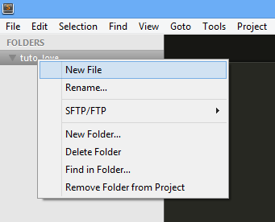
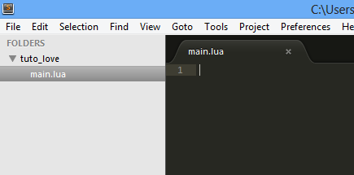
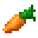
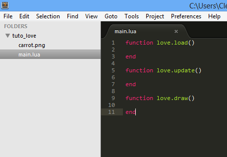
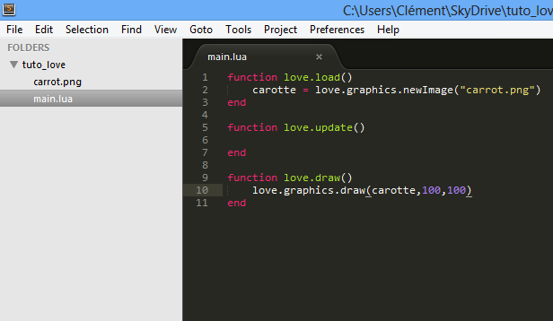
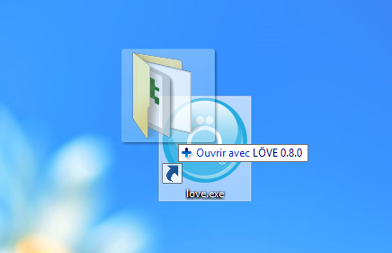
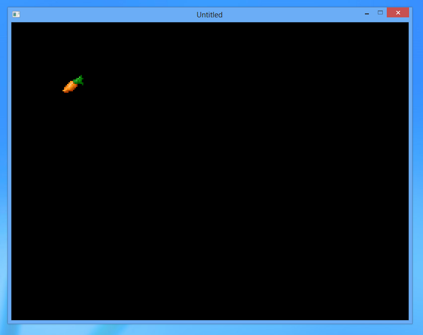
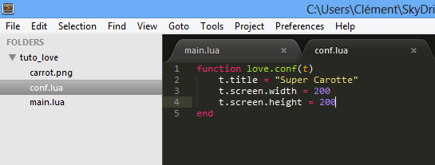
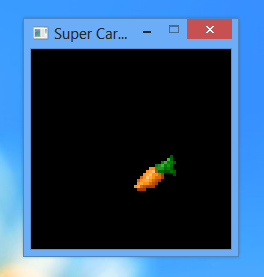

Dans ce guide, je vais vous apprendre à créer des jeux 2D stupéfiants grâce au framework Löve. Il n'est pas nécéssaire de savoir déjà bien programmer, Löve interprétant du Lua, un langage assez simple et accessible aux débutants.
NB: Pour éviter des problèmes de lissage de texte, il se peut que, selon votre navigateur et OS, cette page utilise Cufon. Si vous souhaitez désactiver ce lissage, rendez-vous dans les réglages et décochez la case lissage cufon.
Aussi, ce guide est actuellement en construction. Il se peut qu'à l'heure où vous lisez ces lignes, toutes les parties ne soient pas complétées.
Pour suivre ce guide, vous aurez besoin de deux choses. Un éditeur de texte avec colorisation syntaxique, et l'interpréteur Löve.
Si vous n'avez pas d'éditeur de code déjà installé, je ne peux que vous conseiller Sublime Text. C'est un logiciel qui possède toutes les fonctions dont nous aurons besoin tout en gardant une interface claire et simple. Il n'est pas gratuit, mais possède une version d'essai complète illimitée dans le temps.
Rendez-vous sur la page Downloads, téléchargez la version correspondant à votre OS et lancez l'installation.
Rien de plus simple, rendez-vous simplement sur la page officielle du projet, téléchargez la version correspondant à votre OS et lancez l'installation.
Nous allons commencer par créer notre premier projet. En fait, pas besoin de grand chose. Créez un nouveau dossier sur votre ordinateur, "tuto_love" par exemple, à l'emplacement que vous voulez.
Maintenant, ouvrez Sublime Text. Dans l'onglet Project, faites Add Folder to Project, sélectionnez votre dossier puis OK. Cela nous facilitera les choses, puisqu'à présent votre dossier apparait sur le paneau de gauche.
Nous allons maintenant créer un fichier main.lua, c'est ce fichier que Löve se chargera d'éxécuter dès le lancement du jeu. Pour cela, faites un simple clic droit sur votre dossier dans le panneau de gauche, et New File. Un nouvel onglet apparaît dans l'éditeur, faites Ctrl+S, nommez ce fichier main.lua puis OK
Votre espace de travail devrait désormais ressembler à ça :
Bien ! Maintenant, nous allons pouvoir commencer les choses sérieuses.
Pour comprendre comment afficher un sprite sur notre écran, il faut d'abord comprendre comment fonctionne un jeu Löve. Rassurez-vous, c'est très simple. Comme je vous l'ai indiqué précédemment, c'est un fichier main.lua que Löve va rechercher et éxécuter au lancement du jeu. Dans ce fichier, Löve va ensuite chercher plusieurs fonctions :
Cette fonction contiendra toute la logique d'initialisation de votre jeu. Comme le chargement des images, préparation d'une carte, d'un personnage, etc...
Cette fonction sera exécutée à chaque "boucle" de jeu. Nous en parlerons plus tard.
C'est dans cette fonction que nous contrôlons tout ce qui se passe à l'écran.
Ce sont les trois fonctions principales. Il y en a d'autres, nous en parlerons dans la suite de ce guide. Sachez que ces fonctions sont appellées les fonctions de callback. Bien ! Copiez collez donc ces trois fonctions dans votre main.lua :
Pour afficher un sprite, nous aurons besoin d'une image ! J'utiliserais cette carotte en provenance de minecraft, libre à vous de l'utiliser ou de choisir une autre image.
L'important étant de copier cette image dans votre dossier tuto_love. Votre espace de travail devrait désormais ressembler à ça :
Bien. Pour afficher notre chère carotte sur l'écran, il faut tout d'abord la charger ! Cela se fait très simplement par l'appel de la fonction love.graphics.newImage. Et bien sûr, nous allons placer ce chargement dans love.load, comme ça notre image sera chargée dès le début du jeu, et une seule fois.
Dans ce bout de code, nous avons fait deux choses. Tout d'abord créé une nouvelle variable de nom carotte via carotte =, et nous lui avons directement assigné l'image chargée par love.graphics.newImage. La variable carotte sera maintenant accessible dans l'ensemble du jeu. Ça tombe bien, nous ce qu'on veut, c'est l'afficher, et donc l'utiliser dans love.draw.
Pour dessiner à l'écran notre image précédemment chargée, encore une fois c'est très simple, il suffit d'appeler la fonction love.graphics.draw, avec en paramètres l'image à dessiner, la position x et la position y souhaitées. Allons-y :
Votre espace de travail devrait donc désormais ressembler à ça :
Bien ! Nous sommes déjà prêts à lancer ce premier jeu. C'était du rapide n'est-ce pas ? Pour lancer un jeu avec Löve, c'est très simple. Il suffit de faire glisser le dossier contenant le main.lua sur l'icone de Löve :
Le jeu se lance !
Comme prévu, notre carotte s'affiche en 100,100. Par contre, la fenêtre s'intitule Untitled et elle est un peu grande. Voyons comment régler ça grâce au fichier conf.lua.
Créez un nouveau fichier dans votre dossier tuto_love, comme nous avons appris à le faire, et nommez-le conf.lua. Collez-y la fonction suivante :
Nous pouvons maintenant insérer dans cette fonction des paramètres de configurations. De nombreuses options sont disponibles, mais voyons déjà comment modifier la taille de la fenêtre et son titre.
t.title est utilisé pour modifier le titre de la fenêtre, t.screen.width sa largeur, et t.screen.height sa hauteur, en pixels.
Voyons ce que cela donne maintenant en lançant le jeu :
C'est mieux ! Ou pas, en fait ça dépend de ce que l'on veut faire. Je vous laisse bidouiller un peu ces valeurs pour vous familiariser avec le framework. En tout cas, nous avons réussi à afficher un sprite. Vous avez bien avancé, cette sous partie est terminée !
Partie à compléter
Dans cette partie, nous allons apprendre à utiliser les entrées utilisateur pour les faire interagir avec votre jeu. Commençons par la souris.
L'objet love.mouse nous fournit plusieurs fonctions pour récupérer les données de la souris. Parmi ces fonctions, notons la présence de love.mouse.getX et love.mouse.getY permettant de récupérer respectivement les positions X et Y de la souris dans la fenêtre.
Reprenons notre main.lua du dossier tuto_love de tout à l'heure, et dans love.draw remplaçons les coordonnées d'affichage de la carotte par les appels de fonctions suivants :